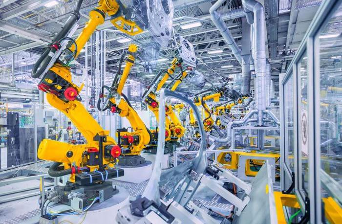
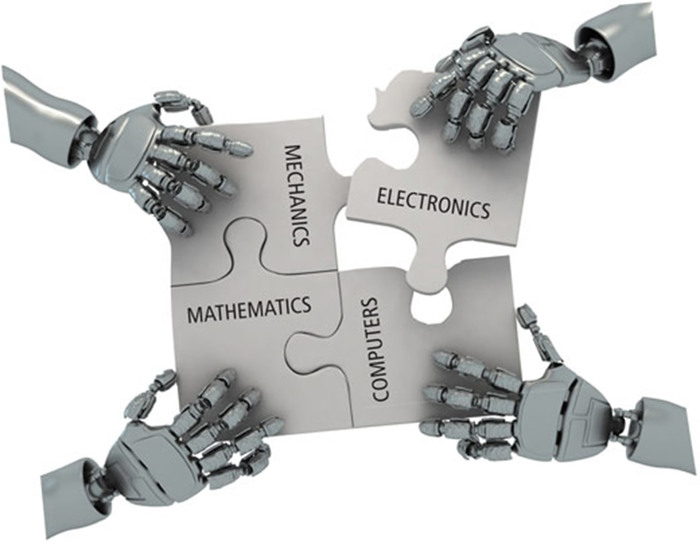

Robotics
 26 May 2018
26 May 2018
In the last two decades or so, robots have been widely used in industries to replace human effort. They are also portrayed in sci-fi movies as humanoids, so what exactly are robots and what is robotics based on? This article aims to give you a sneak peek into the field of robotics.
The concept of robotics is derived from the fields of electronics, computer science, artificial intelligence, mechatronics, nanotechnology, and bioengineering. Hence, robotics forms a derived field of engineering. In simple terms, a robot is literally a "slave".
Robotics is the conception, design, manufacture, and operation of computer programmable machines that are capable of carrying out series of actions automatically.
Robotics primarily focuses on automation. A robot is a device which performs tasks automatically without repeatedly being programmed or changed. It is initially programmed and an instruction set is provided to them to automate a particular task. It performs the specified sequence of operations repeatedly with the same accuracy.
Basics of electronics play a major role in the development of robots. It is important to understand the workings of components like motors, actuators, sensors, etc. before we design a robot. The design and assembling of a robot is crucial to provide an aesthetic and a clean build. Microcontrollers such as Arduino boards, raspberry pi's coupled with coding can get you started with your robots. Generally, C/C++ is preferred over other coding languages as they allow interaction with low-level hardware and a real-time performance.
Robotics heavily relies on physics, probability, and linear algebra. Linear algebra and physics are pivotal for laying out matrices which help in the movement of robots. Probability plays a key role in machine learning and AI algorithms, making it very important to have a strong foundation in the above-mentioned subjects.
Robots are generally given the form of humanoids in most sci-fi movies, practically speaking a robot can have any physical form. Robotic arms are widely used in automobile industries, although the arm doesn't move, it facilitates the displacement of objects and hence can be classified as a robot. A vacuum cleaner which can automatically detect and clean dirt in a room without being asked to or guided can also be considered as a robot.
Robotics is a vast area in engineering and requires a fair amount of expertise as it is a derived application. It is important to identify your area of interest in the field of robotics and work towards it by reading the prototypes and design of existing robots before implementing your own robot. Robots can be used to work in dangerous and delicate environments with a great efficiency and reduced risks.